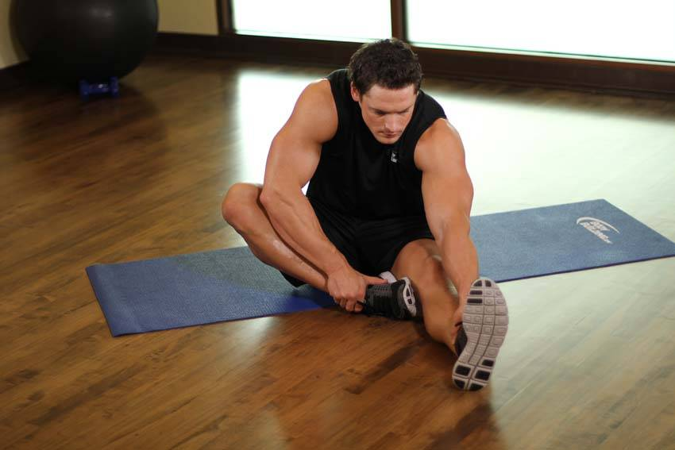

- Sit on a mat with your right leg extended in front of you and your left leg bent with your foot against your right inner thigh.
- Lean forward from your hips and reach for your ankle until you feel a stretch in your hamstring. Hold for 15 seconds, then repeat for your other side.